A casa que pertenceu a Sô Neco
Um casarão do século XVIII, erguido em plena Estrada Real, transformado em guardião da memória tropeira.
Da casa de um tropeiro ao museu
O Museu do Tropeiro ocupa uma casa construída no século XVIII, que pertenceu a um tropeiro conhecido como Sô Neco. Inaugurado em 29 de março de 2003, o museu fica em Ipoema, pequena comunidade a cerca de 70 km de Belo Horizonte, distrito de Itabira, situada em plena Estrada Real.
Com cerca de 400 peças em exposição à época da inauguração, número que hoje ultrapassa 500 objetos em exibição, além de centenas na reserva técnica, o acervo faz alusão à cultura tropeira: indumentária, arreios, ferramentas de ofício, mobiliário, documentos e fotografias.
O tropeirismo promoveu o desenvolvimento social e econômico do país nos séculos XVIII e XIX, possibilitando a construção de vilas e cidades a partir dos ranchos de pouso e favorecendo o enriquecimento das regiões por onde passavam as tropas de muares.
"Tropeiros atravessavam o país em busca dos muares como meio de transporte. Grande parte da comercialização do muar encontrado no Sul era destinada à região das Minas Gerais."
Relato histórico associado à direção do museu, registrado em reportagem do Correio Braziliense (2011). A curadoria atual deve confirmar a manutenção desta citação e da autoria antes da publicação.
Um incêndio, uma reconstrução
Em 2008, o museu foi atingido por um incêndio de origem criminosa, motivado por disputas políticas locais. A comunidade de Ipoema, junto à Prefeitura de Itabira, reergueu o espaço, que reabriu ao público em 29 de maio de 2009, no aniversário de seis anos do museu, sob o tema "Tropas da Paz". Um cartaz colocado na sala na época dizia: "o fogo não pode apagar a memória de um povo".
Reconhecimento oficial
Embora funcionasse desde 2003, o Museu do Tropeiro só foi oficialmente criado por lei em 28 de outubro de 2021, pela Lei Municipal nº 5.331. A partir desse reconhecimento legal, o museu passou a poder inscrever projetos e buscar recursos por meio de leis de incentivo à cultura. Em 2013, a Lei Estadual nº 20.709 já havia concedido a Itabira o título de Capital Estadual do Tropeirismo, reforçando o papel de Ipoema como guardiã dessa memória.
Mais que um museu, um espaço cultural
Além da sala de exposição, o museu funciona como ponto de encontro da comunidade, com apresentações artísticas, degustação de culinária regional e ações educativas.
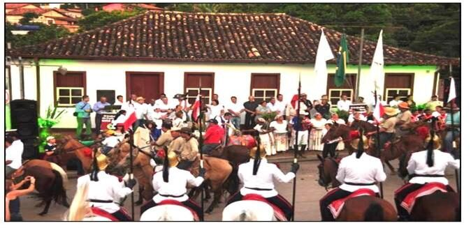
Cavalgadas e desfiles
Cavaleiros da Estrada Real e grupos como os Dragões da Inconfidência marcam presença nas comemorações do museu.
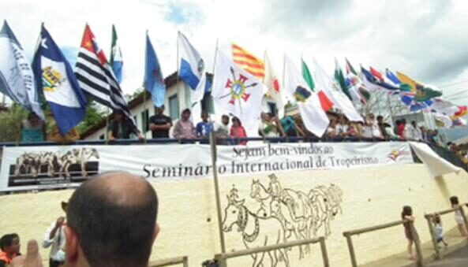
Seminário Internacional do Tropeirismo
O museu sediou encontro que reuniu delegações de diferentes estados para discutir a história e a preservação da cultura tropeira.
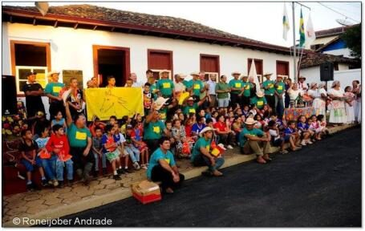
Cavaleiros da Cultura
Atividades que aproximam escola, comunidade e museu, despertando pertencimento nas novas gerações.
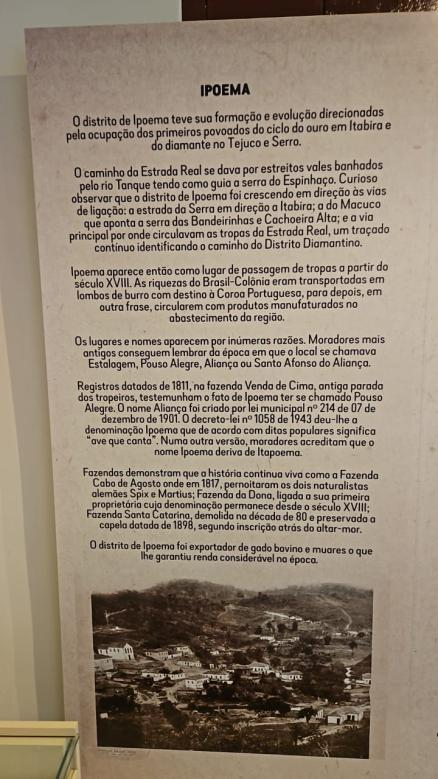
Festival da Cultura Tropeira
Realizado pela Prefeitura de Itabira com apoio de municípios vizinhos, o festival celebra o aniversário do museu todos os anos em maio, com cortejo de cavaleiros, shows e programação educativa. Em 2026, chegou à 5ª edição, junto aos 25 anos do museu.
Pesquisa e conhecimento tradicional
O museu também é espaço de encontro entre saber popular e pesquisa acadêmica. Em parceria com a Universidade Federal de Minas Gerais (UFMG), recebeu a exposição "Viajantes Naturalistas e as Plantas Medicinais em Ipoema", valorizando o conhecimento tradicional sobre plantas tão comum entre os tropeiros.
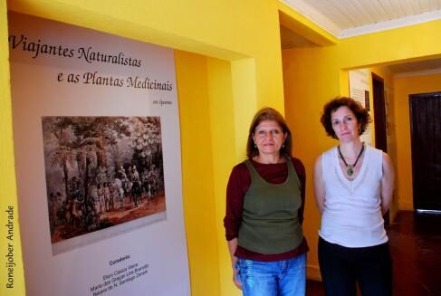
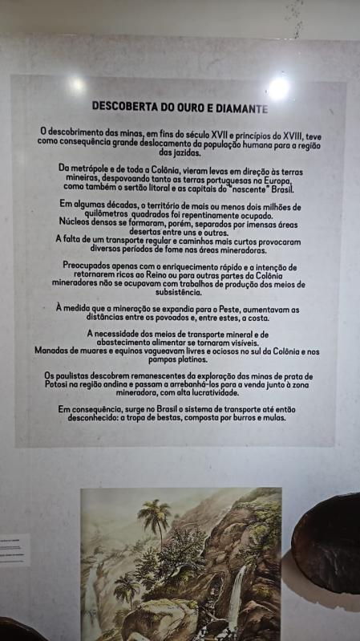
Direção e memória em curadoria permanente
Em 2022, durante as comemorações de 19 anos do museu, a Prefeitura de Itabira formalizou a criação legal do espaço e reconheceu publicamente o trabalho de sua diretora à frente do museu, Tayane D'Ávila Campos, filha de tropeiro. "O museu é um divisor de águas na promoção do turismo local e também na história dos moradores daqui, que, assim como eu, representam a cultura tropeira", declarou a diretora à época.
Os próprios painéis expositivos do museu reúnem parte dessa curadoria: textos sobre a formação de Ipoema, o comércio de tropas nos séculos XVIII e XIX e o papel das mulheres na cultura tropeira, material que este site ainda está incorporando aos poucos, com a devida checagem antes da publicação oficial.
O museu pelos olhos de quem visita
Registros feitos por visitantes e parceiros e compartilhados publicamente. Clique em uma foto para ampliá-la.
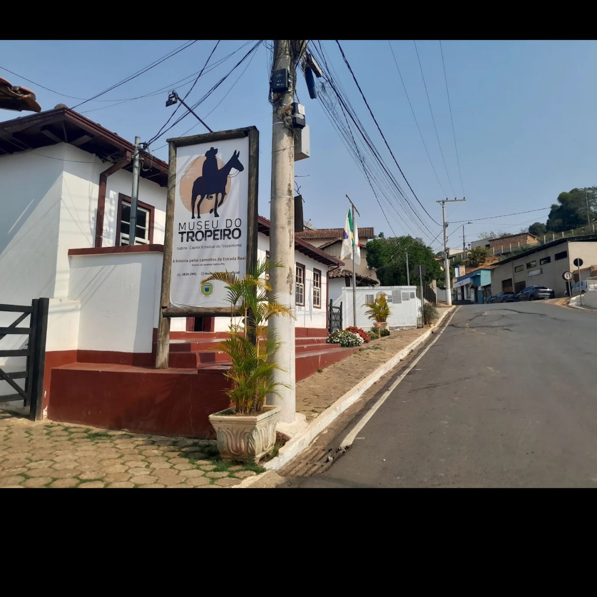
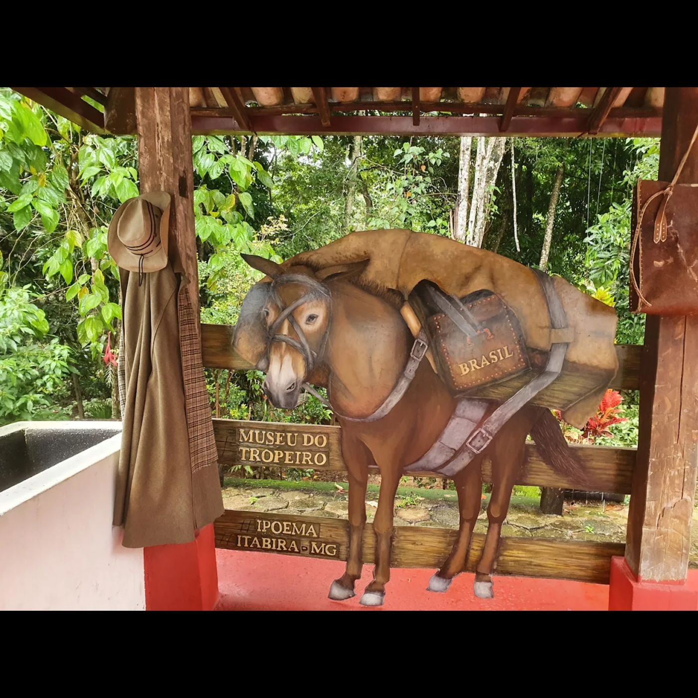
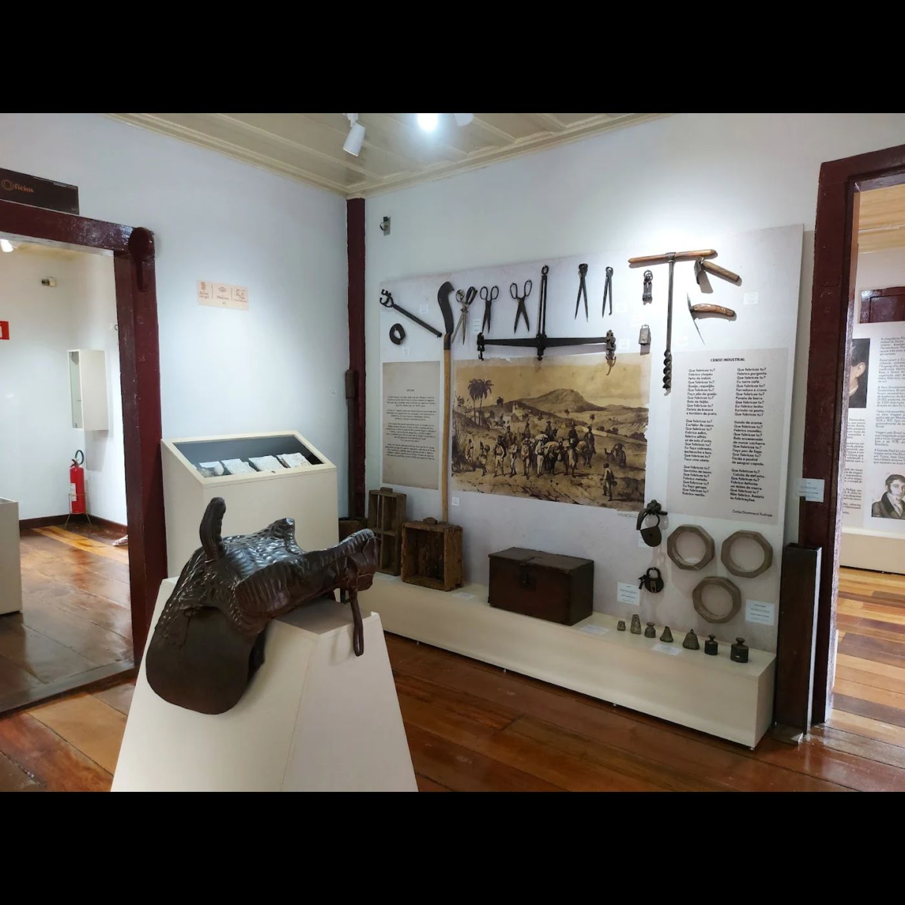
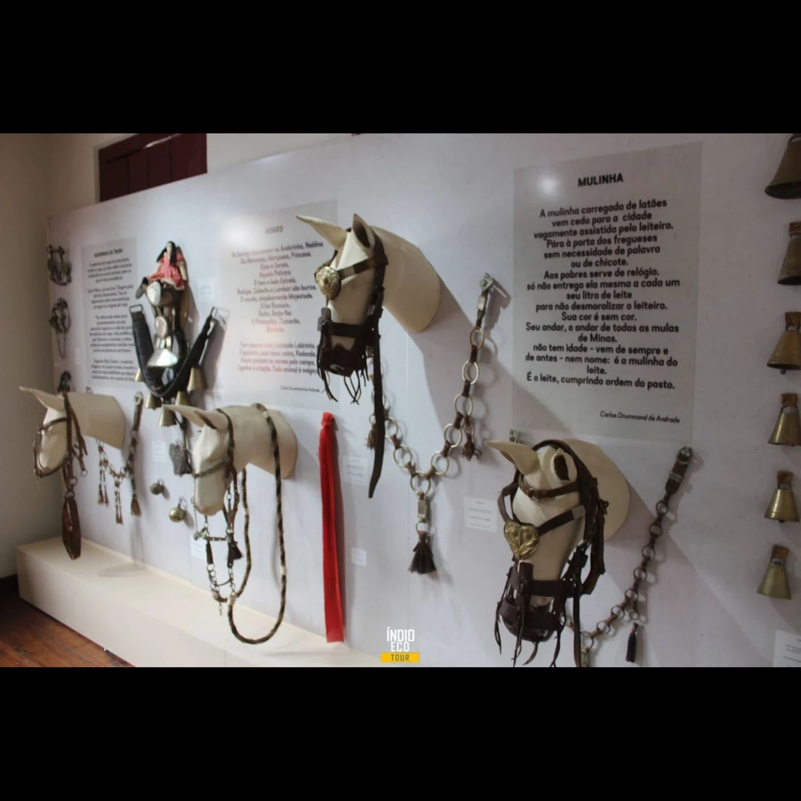
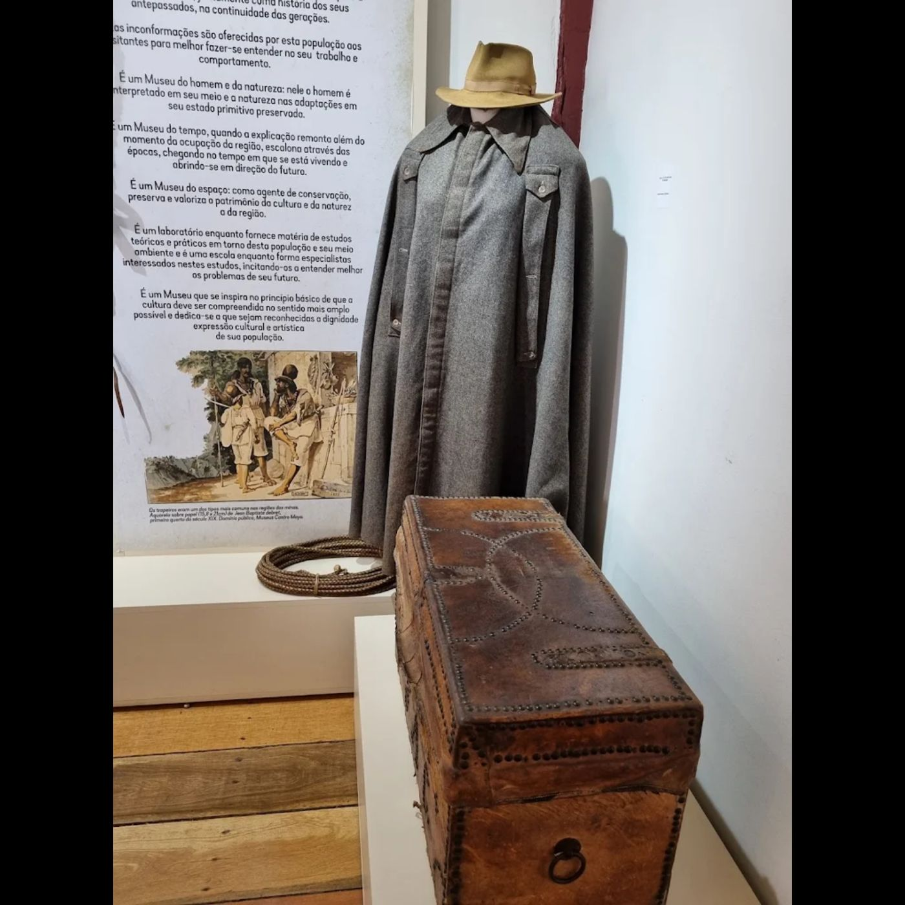
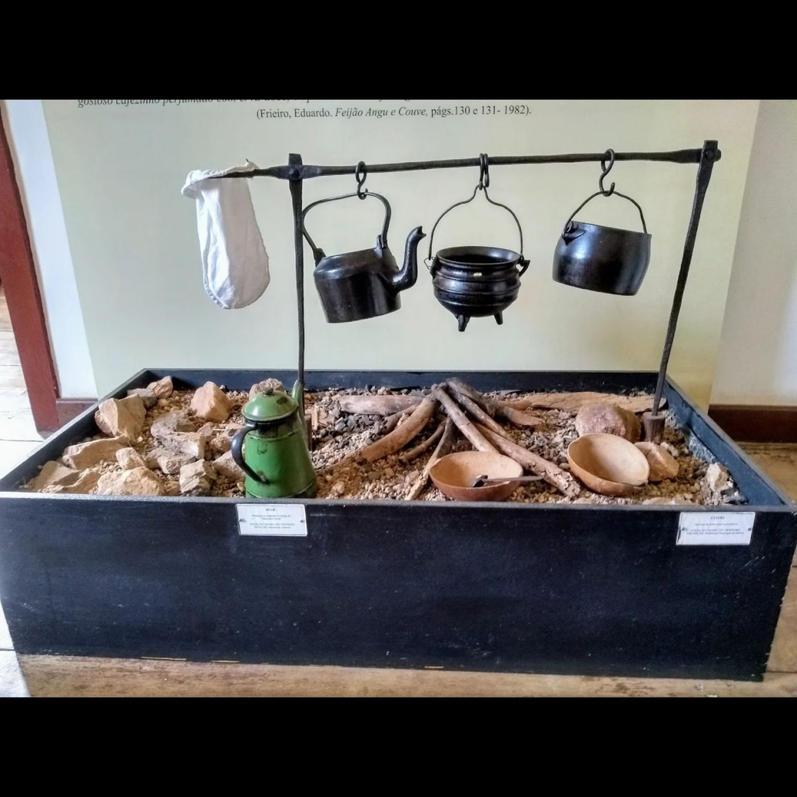
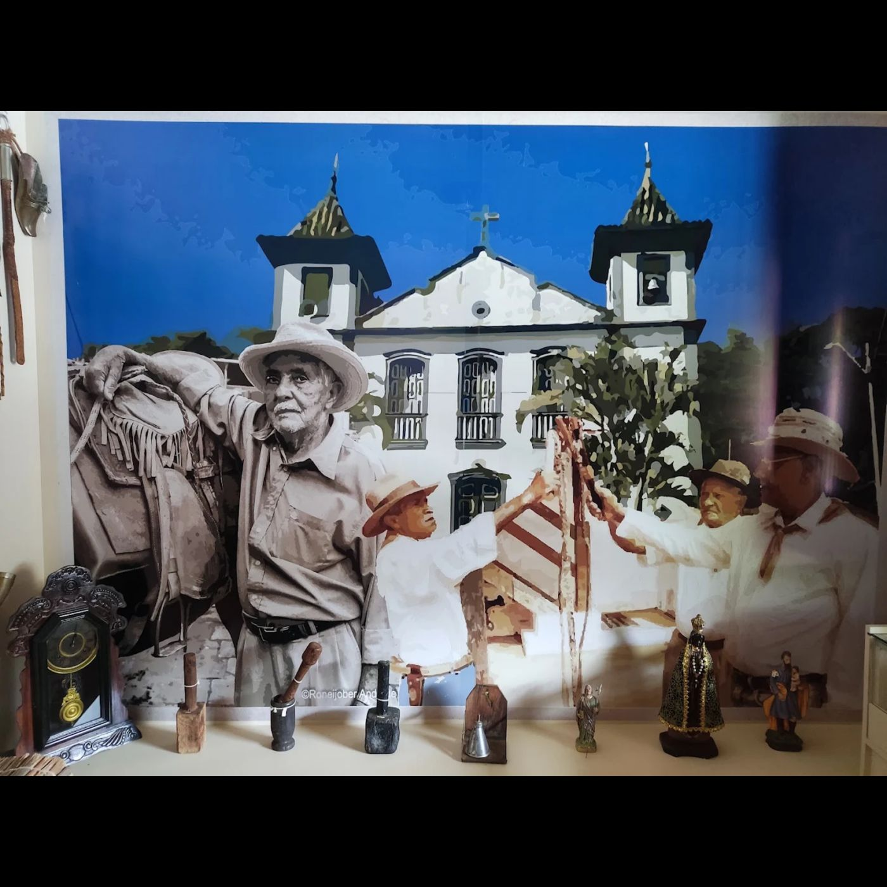
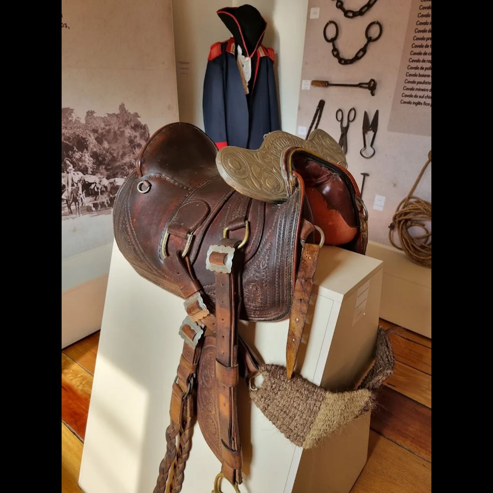
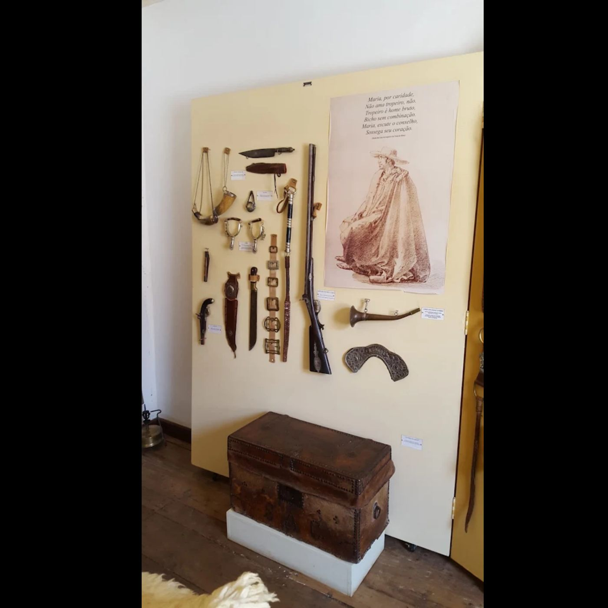
Quem mantém a tradição viva
Lavadeiras de Ipoema
Grupo folclórico que relembra, em canto e dança, os tempos das lavadeiras do Rio Pouso Alegre, que passa atrás do museu.
Estaladores de Chicote
Preservam uma das linguagens sonoras mais características da lida tropeira.
Comitiva do Berrante e Sons da Tropa
Recriam os sons que guiavam as tropas pelas estradas: o berrante como voz do tropeiro.
Junto aos Meninos Trovadores da Estrada Real, esses grupos se apresentam na Roda de Viola, de maio a outubro, nos sábados de lua cheia. Veja a agenda de visitas →